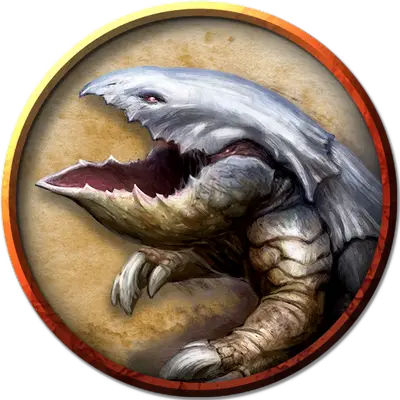

Панцирница нежить
Undead Bulette
Большая Нежить, без мировоззрения

Класс Доспеха 17 (природный доспех)
Хиты 125 (9к10 + 76)
Скорость 40 футов, копая 40 футов
| мод | спас | ||
|---|---|---|---|
| СИЛ | 19 | +4 | +4 |
| ЛОВ | 11 | +0 | +0 |
| ТЕЛ | 21 | +5 | +5 |
| мод | спас | ||
|---|---|---|---|
| ИНТ | 2 | −4 | −4 |
| МДР | 10 | +0 | +0 |
| ХАР | 5 | −3 | −3 |
Навыки Восприятие +6
Уязвимость к урону излучение
Сопротивление урону некротическая энергия
Иммунитет к урону яд
Иммунитет к состояниям отравление
Чувства тёмное зрение 60 футов, чувство вибрации 60 футов, пассивное Восприятие 16
Опасность 5 (1800 опыта)
Бонус мастерства +3
Особенности
Прыжок с места. Панцирница совершает прыжки в длину на расстояние до 30 футов и прыжки в высоту на расстояние до 15 футов, хоть с разбегом, хоть без него.
Действия
Укус. Рукопашная атака оружием: +7 к попаданию, досягаемость 5 футов, одна цель. Попадание: Колющий урон 30 (4к12 + 4).
Смертельный прыжок. Если панцирница прыгает как минимум на 15 футов частью перемещения, она может после этого действием приземлиться на лапы в пространстве, содержащем одно или несколько других существ. Каждое такое существо должно преуспеть в спасброске Силы или Ловкости Сл 16 (на выбор цели) иначе будет сбито с ног и получит дробящий урон 14 (3к6 + 4) плюс рубящий урон 14 (3к6 + 4). При успешном спасброске существо получает только половину урона, не сбивается с ног, и толкается на 5 футов из пространства панцирницы в свободное пространство по своему выбору. Если в пределах дистанции нет свободного пространства, существо вместо этого сбивается с ног в пространстве панцирницы.